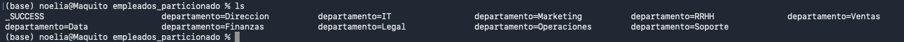

Paralelización de colecciones y particionado
DESCRIPCIÓN
En Apache Spark, el rendimiento y la escalabilidad dependen directamente de cómo se distribuyen los datos entre los nodos del clúster. Dos conceptos fundamentales para comprender esta distribución son la paralelización de colecciones y el particionado de datos.
Estos mecanismos permiten dividir los datos en fragmentos (particiones) que pueden procesarse simultáneamente en múltiples executors, aprovechando la arquitectura distribuida y reduciendo el tiempo total de ejecución.
PARALELIZACIÓN
Paralelizar una colección significa dividir un conjunto de datos en múltiples particiones para que puedan ejecutarse tareas en paralelo. En Spark, la unidad mínima de paralelismo es la partición.
En términos operativos, Spark programa el trabajo como un conjunto de tareas (tasks) que procesan particiones de datos. De forma general:
1 partición = 1 task (en un stage dado)Paralelización de colecciones locales (RDD)
Creación mediante parallelize()Spark permite convertir una colección local (por ejemplo, una lista en Python) en un RDD distribuido:
rdd = spark.sparkContext.parallelize([1, 2, 3, 4, 5])Internamente, Spark divide la colección en particiones; cada partición puede ejecutarse en un executor distinto (o en hilos distintos en modo local), permitiendo paralelismo durante el procesamiento.
Especificar el número de particionesEs posible indicar explícitamente cuántas particiones se desean al paralelizar una colección:
rdd = spark.sparkContext.parallelize(range(1, 1001), 4)En este caso se crean 4 particiones. Si no se especifica, Spark utiliza un valor por defecto asociado al paralelismo del entorno:
spark.default.parallelismHabitualmente, este valor se relaciona con el número total de núcleos disponibles en el clúster (o en local), aunque puede variar según el cluster manager y la configuración.
PARTICIONADO
Una partición es un bloque lógico de datos que Spark procesa de forma independiente. Cada partición:
- Se asigna a una task durante la ejecución de un stage.
- Puede ejecutarse en paralelo con otras particiones.
- Condiciona el grado máximo de paralelismo.
El número de particiones influye directamente en el rendimiento: determina cuántas tareas pueden ejecutarse simultáneamente y el tamaño de cada unidad de trabajo.
Tipos de particionado y ajustes de particiones
1. Particionado por defecto al cargar datosCuando se cargan datos desde un sistema de archivos, Spark crea particiones en función de factores como:
- Tamaño del fichero y número de ficheros.
- Bloques del sistema de archivos (por ejemplo, HDFS).
- Configuración interna de Spark y del origen de datos.
Por ejemplo, al leer un CSV:
df = spark.read.csv("datos.csv")El número de particiones resultante dependerá del origen y de cómo Spark y el conector dividan el trabajo.
2 Repartition()
El método repartition(n) redefine el número de particiones y redistribuye los datos de forma más uniforme,
pero implica un shuffle (reorganización de datos):
df2 = df.repartition(10)Características principales:
- Redistribución más equilibrada.
- Implica transferencia de datos por red (shuffle), por lo que es costoso.
- Útil cuando se requiere balanceo de carga o paralelismo adicional.
El método coalesce(n) reduce el número de particiones intentando evitar un shuffle completo:
df2 = df.coalesce(2)Características principales:
- Más eficiente que repartition para reducir particiones.
- Puede generar desequilibrio (skew) si la distribución no queda uniforme.
- Muy utilizado antes de escribir resultados para evitar muchos ficheros pequeños.
Particionado por clave
Particionado por clave en RDDEn RDDs de pares clave-valor, se puede controlar el particionado para que claves iguales vayan a la misma partición:
rdd_kv = spark.sparkContext.parallelize([("A", 1), ("B", 2), ("A", 3)])
rdd_part = rdd_kv.partitionBy(4)Este enfoque es especialmente útil para operaciones por clave como agregaciones, joins o reduceByKey.
Particionado por columna en DataFrameEn DataFrames, se puede repartir el dataset por una o varias columnas para agrupar valores iguales en las mismas particiones:
df2 = df.repartition("columna")
Esto puede mejorar el rendimiento de operaciones como groupBy o join, aunque suele implicar shuffle.
Shuffle y su relación con el particionado
Un shuffle es el proceso por el cual Spark redistribuye datos entre particiones, normalmente a través de la red. Ocurre, por ejemplo, cuando se realizan:
groupBy/groupByKeyjoinrepartition- Algunas ordenaciones (
orderBy)
Durante un shuffle:
- Los datos se reorganizan según una clave o criterio de particionado.
- Se transfieren por red a nuevos executors/particiones.
- Se crean nuevas etapas (stages) en el DAG de ejecución.
El shuffle es uno de los costes más relevantes en Spark, por lo que debe optimizarse y minimizarse cuando sea posible.
Relación entre particiones y rendimiento
Pocas particiones- Infrautilización de CPU: menos tareas concurrentes que núcleos disponibles.
- Tareas más largas (cada una procesa más datos).
- Riesgo de cuellos de botella por falta de paralelismo.
- Mayor overhead de planificación (más tasks a gestionar).
- Más metadata y coste de scheduling.
- Riesgo de generar muchos ficheros pequeños al escribir resultados.
Una regla empírica utilizada en muchos escenarios es configurar entre 2 y 4 particiones por núcleo, ajustando según volumen de datos, coste de shuffle y tipo de operaciones. En cualquier caso, la decisión debe basarse en mediciones y observación de la ejecución (por ejemplo, usando Spark UI).
Particionado al escribir datos
Spark permite particionar la salida al escribir, creando directorios por valores de una columna:
df.write.partitionBy("categoria").parquet("salida")La estructura de salida resultante suele ser:
salida/
categoria=A/
categoria=B/
...Ventajas del particionado en escritura:
- Mejor rendimiento en lecturas filtradas mediante partition pruning.
- Menor lectura innecesaria en consultas por categoría/valor.
- Organización lógica más clara para datasets grandes.
Skew (desequilibrio de particiones)
El skew ocurre cuando la distribución de datos por particiones es desigual. Por ejemplo, si una clave concentra la mayoría de registros, una partición puede volverse mucho más pesada y convertirse en cuello de botella.
Ejemplo conceptual:
df.groupBy("pais").count()Si el 90% de registros pertenece a un único país, las particiones asociadas a esa clave serán desproporcionadas.
Estrategias comunes para mitigar skew:
- Salting: añadir una clave auxiliar aleatoria para distribuir registros de una clave dominante.
- Repartitioning selectivo o por múltiples columnas.
- Ajuste de particiones y diseño de joins/agregaciones para reducir concentración.
Configuraciones relevantes
Existen parámetros de configuración que influyen directamente en el particionado y el paralelismo:
spark.conf.set("spark.sql.shuffle.partitions", 200)
spark.conf.set("spark.default.parallelism", 8)-
spark.sql.shuffle.partitions: número de particiones por defecto tras operaciones con shuffle en Spark SQL (DataFrames). -
spark.default.parallelism: paralelismo por defecto, especialmente relevante para operaciones RDD.
Diferencias entre RDD y DataFrame respecto al particionado
| Aspecto | RDD | DataFrame |
|---|---|---|
| Control manual | Alto | Medio |
| Optimización automática | No | Sí (Catalyst y motor SQL) |
| Ajustes típicos de shuffle | Más manual (según operación) | Configurable vía spark.sql.shuffle.partitions |
| Partition pruning | No | Sí (cuando el formato y metadatos lo permiten) |
Tabla 1: Tabla de contenidos sobre diferencias entre rdd y dataframe respecto al particionado
CONCLUSIÓN
La paralelización y el particionado son elementos críticos para el rendimiento en Spark. El grado de paralelismo depende directamente del número de particiones, mientras que el shuffle introduce un coste relevante al redistribuir datos entre nodos. Ajustar correctamente el número de particiones, minimizar shuffles innecesarios y aplicar estrategias de mitigación de skew permite diseñar aplicaciones distribuidas más eficientes y escalables.
EJERCICIO RESUELTO PASO A PASO
Guardar empleados particionados por departamento
Este ejercicio vamos a coger el listado de empleados del fichero empleados.json y vamos a guardar la información en parquet, particionada por departamento.
- Leemos el fichero JSON
- Guardamos en parquet por particionado
- Comprobamos el parquet y la salida.
El resultado esperado es:

Figura 1: Resultado del ejercicio Spark agrupado por departamento